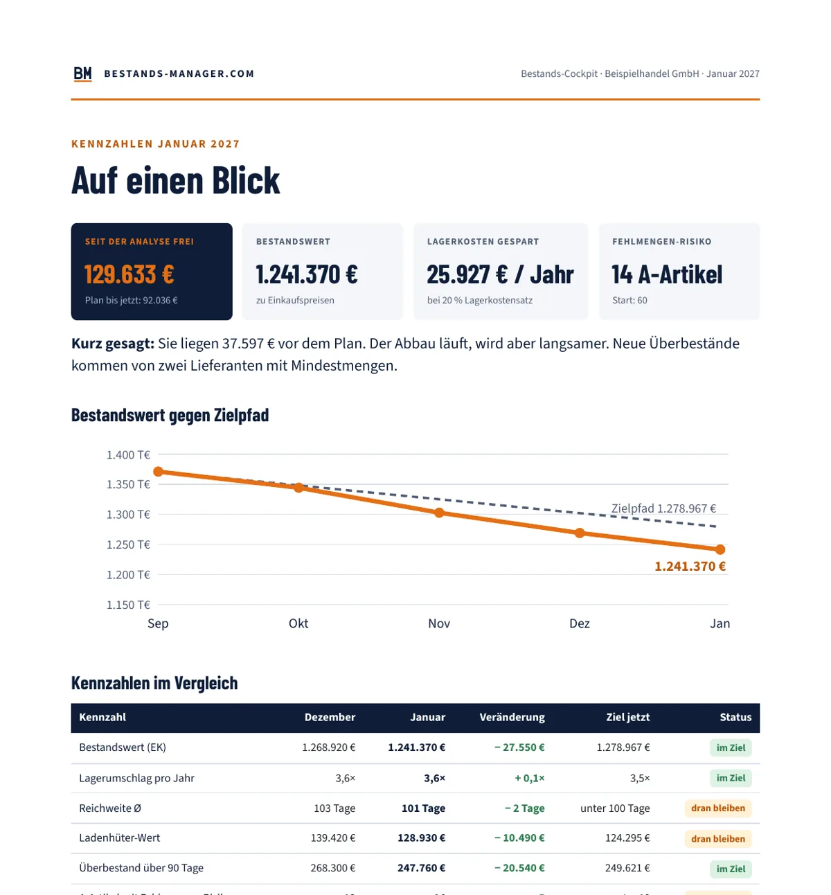

Dranbleiben nach der Bestandsanalyse
Das Bestands-Cockpit
Nach der Analyse wissen Sie, wo Sie ansetzen. Damit die Maßnahmen wirken und nichts Neues aus dem Ruder läuft, schicken Sie mir jeden Monat Ihren Export aus der Warenwirtschaft. Sie bekommen eine kurze Auswertung zurück: Wo stehen Sie, was läuft aus dem Ruder, was ist im nächsten Monat zu tun.
Monatlich kündbar. Im Anschluss an die Bestandsanalyse. Gemäß § 19 UStG wird keine Umsatzsteuer berechnet.

Das bekommen Sie jeden Monat
- Die wichtigsten Kennzahlen: Bestandswert, Lagerumschlag, Reichweite
- Ladenhüter, Überbestand und A-Artikel mit Fehlmengen-Risiko
- Vergleich zum Vormonat und zum Zielpfad aus der Bestandsanalyse
- Warnungen mit Artikelnummern: neuer Überbestand, drohende Engpässe, einbrechender Verkauf
- Kurzkommentar mit den 3 wichtigsten Maßnahmen für den nächsten Monat
- Stand Ihres 90-Tage-Plans
- Die Auswertung als PDF, die Artikellisten als Excel, innerhalb einer Woche nach Ihrem Export
- Auf Wunsch 30 Minuten Besprechung per Video

So läuft es ab
Passt, wenn …
- Sie eine Bestandsanalyse gemacht haben und das Ergebnis halten wollen
- Sie keine Zeit haben, jeden Monat selbst Zahlen auszuwerten
- Sie früh merken wollen, wenn ein Lieferant oder eine Warengruppe aus dem Ruder läuft
Häufige Fragen
Kann ich das Cockpit ohne Bestandsanalyse buchen?
Nein. Die Analyse legt die Grenzwerte und den Zielpfad fest. Ohne sie fehlt der Maßstab.
Welche Daten brauchen Sie?
Denselben Export wie für die Analyse: Artikelnummer, Bestand, Einkaufspreis, Verkäufe, letzter Verkauf, Lieferant.
Wie lange bin ich gebunden?
Gar nicht. Das Cockpit ist monatlich kündbar.
Was passiert mit meinen Daten?
Sie werden nur für Ihre Auswertung verwendet und vertraulich behandelt. Details in der Datenschutzerklärung.
Wie fange ich an?
Mit dem kostenlosen Erstgespräch, 45 Minuten per Video. Oder per Mail an info@bestands-manager.com, Telefon 0156 79657888.